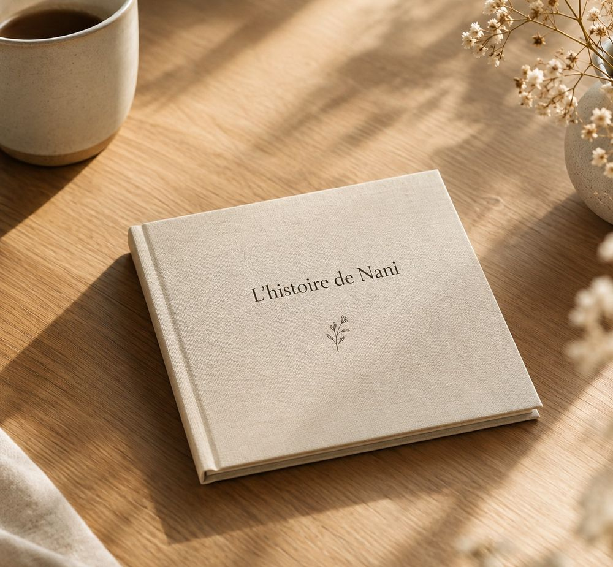

Feuilletez un livre, page après page.
Voici à quoi ressemblent les pages d'un livre Intiqal : une couverture à son nom, une dédicace, des souvenirs racontés avec vos mots et vos photos.


Des souvenirs courts, justes, faciles à relire.
Chaque page met en valeur un souvenir. Voici quelques pages d'un livre imaginaire, « L'Histoire de Madeleine ».
L'Histoire
de Madeleine
Pour Madeleine,
avec tout notre amour.
Le petit port, chaque été. Mon père nous y emmenait avant l'aube pour voir rentrer les barques. Je sens encore le sel et le pain chaud.
Le jour où le chien de la voisine a suivi toute la famille jusqu'à l'église et s'est couché devant l'autel. Le curé a ri plus fort que nous.
4« Ce qui est donné ne se perd jamais. »
Merci, Madeleine,
pour toutes ces histoires.
Une ambiance pour chaque personnalité.
Le contenu reste le vôtre. L'univers donne simplement une personnalité visuelle à l'ensemble.
Doux & naturel
Tons sauge, ambiance apaisée
Élégant & intemporel
Tons sable, sobriété classique
Tendre & fleuri
Tons rosés, douceur
Photo & souvenirs
Tons bleu clair, la photo au premier plan